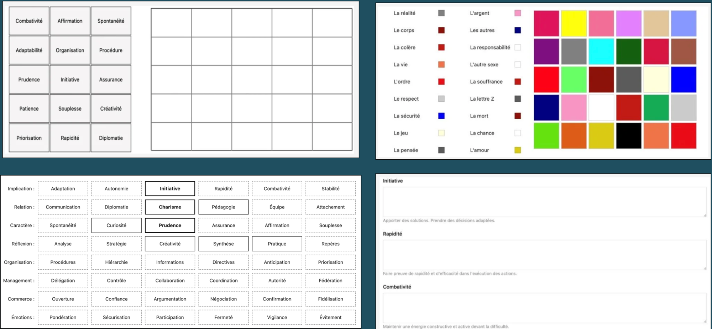

Les outils.
Un guide qui
structure l'information.
Une passation simple, conviviale, performante.
Major Exchanges met à disposition des équipes RH un environnement de travail complet : plateforme web sécurisée, questionnaire en ligne,
guide d'entretien structuré et IA de pré-analyse. Les 48 critères comportementaux sont paramétrés pour chaque mission.
Conçu pour DRH, cabinets de recrutement, coachs et consultants.
L'outil structure l'entretien et la relation candidats-recruteurs sans contraindre. Il se tient sur des exercices interactifs d'auto-évaluation à recouper avec l'appréciation de l'expert RH sur la personnalité et les motivations du candidats. Des exercices simples, agréables, rapides de réalisation.

Aperçu des supports de passation · exercices d'auto-évaluation et grille des 48 critères
Un outil partout
où vous en avez besoin.
Plateforme web
Accès sécurisé à votre espace de travail. Gestion des dossiers candidats, passation du questionnaire, analyse des résultats depuis n'importe quel poste.
Entretiens à distance
Partage du guide et des exercices interactifs avec le candidat en visio. La méthodologie conserve toute son efficacité en configuration distancielle.
Entretien en présentiel
Utilisation sur tablette lors des entretiens en présentiel. L'interface tactile permet de partager les exercices avec le candidat sans rompre la dynamique d'échange.
Un process clair,
du brief à la restitution.
Définition des requis
Ouverture du dossier candidat ou collaborateur. Définition des requis sur les 48 critères comportementaux et motivationnels pertinents pour la mission.
EntreprisePassation du questionnaire
Le candidat répond au questionnaire en ligne à son rythme. L'IA produit une première analyse des tendances comportementales, prête à être recoupée en entretien.
CandidatEntretien guidé
Conduite de l'entretien en visio ou sur tablette en présentiel. Mises en situation et exercices d'auto-positionnement pour recouper l'information.
RecruteurUne prévalidation
au service de l'humain.
L'analyse séquentielle Major Exchanges étudie l'empreinte mémorielle, les réactions inconscientes non contrôlables, les temps de réaction, la gestion de l'espace d'informations et le mode d'organisation. Sous une forme simple et conviviale.
Recoupement réalisé sur 1 500 profils de base, 70 000 informations, 18 000 personnalités et 40 typologies culturelles différentes. La forme du questionnement (grilles, items, formes ou couleurs) est d'un intérêt secondaire — la valeur tient au recoupement.
La décision finale appartient toujours à l'expert RH. L'IA accélère la phase préparatoire et propose un support de rédaction des comptes rendus.
Voir les offres →